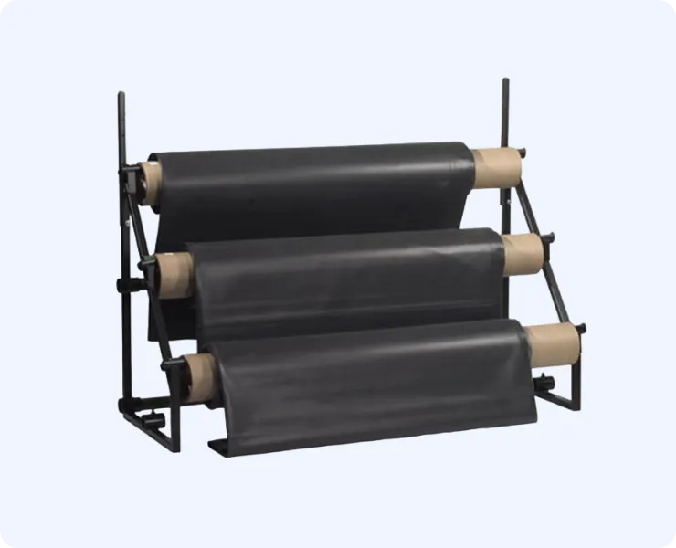

Плёнка для пруда
Плёнка бутилкаучук, 1.2мм, рулоны 6.1,12.2*20м, черный
Цена и наличие
- 1 шт.74 BYN / м²В наличии
Данные на 23.11.2026.
Характеристики
- Производитель
- Carlisle
- Материал
- бутилкаучук
- Длина рулона, м
- 20
- Толщина, мм
- 1,2
- Ширина рулонов, м
- 6.1, 12.2
- Длина рулона
- 20 м
- Максимальный срок эксплуатации, лет
- более 25
- Страна производитель
- США
- Толщина, мм
- 1,2 мм
- Цвет
- черный
- Ширина рулонов, м
- 6.1, 12.2 м
Описание
Цена указана за м²
ПЛЕНКА ДЛЯ ПРУДА БУТИЛКАУЧУКОВАЯ CARLISLE, 1,2ММ, ШИРИНА 6.1,12.2, ЗА М,КВ.,США Высококачественная бутилкаучуковая пленка благодаря своим уникальным свойствам может быть с легкостью использована для гидроизоляции многих построенных как с эстетической, так и с практической целью прудов.
Основные области использования
ОСНОВНЫЕ ОБЛАСТИ ИСПОЛЬЗОВАНИЯ EPDM CARLISLE: • ДЕКОРАТИВНЫЕ ВОДОЕМЫ Carlisle отлично подойдет для оборудования декоративного водоема. Достойное качество данного материала, удобство его эксплуатации позволит быстро и легко соорудить свой живописный уголок. В водоеме, сделанном с использованием бутилкаучуковой пленки Carlisle, можно с легкостью завести рыб или же наслаждаться водными процедурами. • ПРОТИВОПОЖАРНЫЕ И ПРОМЫШЛЕННЫЕ ВОДОЕМЫ Высокая стойкость к проколам, длительный срок эксплуатации, погодоустойчивость оправдывают возможность использования Carlisle для строительства противопожарных и промышленных водоемов. • ВОДОЕМЫ ДЛЯ ИСКУССТВЕННОГО РАЗВЕДЕНИЯ РЫБ Данная гидроизоляционная мембрана для водоема не подвержена воздействию УФ-излучения, вредному влиянию озона и оксидантов, что позволяет существенно снизить риск нарушения биологического равновесия в водоеме. Благодаря этим свойствам Carlisle оптимальна для гидроизоляции водоемов, создаваемых для искусственного разведения рыб. • СЕЛЬСКОХОЗЯЙСТВЕННЫЕ СБОРНИКИ СТОЧНЫХ ВОД Доступная цена, но вместе с тем экологическая безопасность данного продукта позволяет с полной уверенностью применять его для оснащения сельскохозяйственных сборников сточных вод. Мембрана Carlisle с успехом прошла тестирование на применение в животноводческих фермах, поэтому в ее надежности нет никаких сомнений. • КАНАЛЫ В СИСТЕМАХ ОРОШЕНИЯ Большие размеры полотна и простота монтажа позволили занять пленке Carlisle важное место в процессе гидроизоляции каналов в системе орошения.
Монтаж
Монтаж пленки для водоемов: Монтаж пленок для водоемов EPDM не предполагает реализации сложных технических процессов, однако определенные навыки от исполнителей требуются. Если мембраны для пруда установлены правильно, то найти более эффективный способ гидроизоляции будет очень сложно. Даже после многих лет эксплуатации водоем может быть отремонтирован или изменен без особой подготовки и дорогостоящего оборудования. Свойства свободноукладываемой мембраны позволяют создать ровную и гладкую поверхность, не представляющую проблем при обслуживании и уборке.
Особенности
Уникальные характеристики EPDM Сarlisle: пленка для пруда EPDM является единственным материалом, имеющим сертификат ANSI/NSF-61, по которому разрешается использование с питьевой водой; непревзойденная стойкость к низким температурам; сопротивление ударным нагрузкам любой интенсивности и силы; надежная защита от воздействия кислот, ультрафиолета и озона; непроницаемость для водяного пара и отсутствие адсорбции с водой; высокая скорость процесса склейки пленки для пруда в большие полотна без использования сложного и дорогостоящего оборудования; гарантия на материал 25 лет; площадь больших заводских полотен до 465 кв. м.